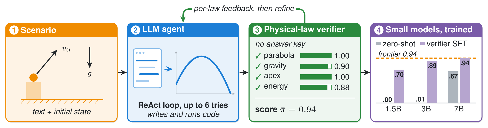
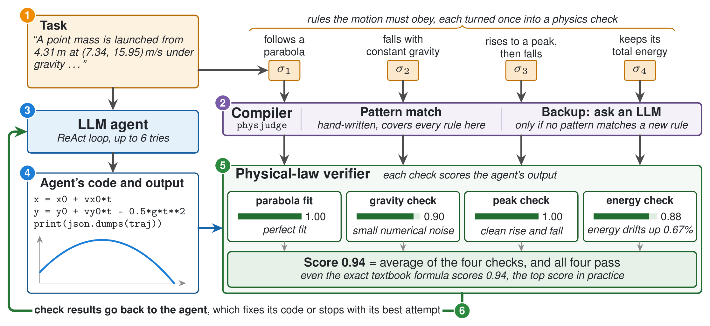
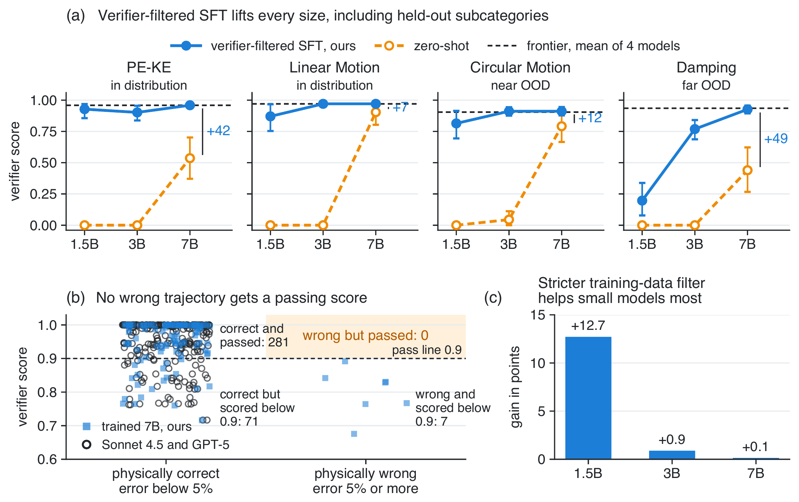

NeurIPS 2026

Where correctness follows closed-form physical laws, the laws themselves can grade a code-writing agent. No expert labels, unit tests or reward model are needed.
Abstract
Code-reasoning agents are usually trained with costly verifiers: expert annotation, hand-written unit tests, or learned reward models. We show that where correctness follows closed-form physical laws, the laws themselves provide dense, automatic rewards with no per-task answer key. We build PhysAgentGym, a code-execution gym for single-body classical mechanics in which a language model reads a physics scenario, writes Python that simulates it, and is scored by a verifier that turns natural-language standards into checks on the emitted trajectory. Audited against withheld exact solutions, all 281 test episodes that the verifier scored at least 0.9 are physically correct. Fine-tuning Qwen2.5-Coder on 491 rollouts selected by the verifier lifts the 7B model from 0.67 to 0.94, on par with Claude Sonnet 4.5, including on a held-out phenomenon, as a 37–80 MB adapter that runs locally. The 1.5B and 3B models rise from near zero to 0.70 and 0.89. Frontier models already reach the highest score the metric gives in practice, so the benchmark's value lies in measuring how small models learn, and reliable training needs at least 3B parameters.
How it works
Each task gives the agent a scenario and the rules its motion must obey. The agent writes code that simulates the scenario, and a verifier checks the resulting trajectory against each rule.

A scenario in words, its starting state, and rules such as "the object follows a parabolic arc" or "total mechanical energy is conserved".
The model writes Python with NumPy and SciPy, runs it, reads the feedback and revises, for up to six steps. Its output is a trajectory of times and positions.
Each rule becomes one of 19 physics checks, such as a parabola fit or an energy check. Each check scores the trajectory from 0 to 1. The exact solution stays hidden from the agent and the verifier.
Claude Sonnet 4.5 rollouts that pass every check with a mean score of at least 0.85 give 491 conversations. QLoRA fine-tunes Qwen2.5-Coder on them in 11 to 25 minutes on one GPU.
Results
Untrained Qwen2.5-Coder scores 0.000, 0.011 and 0.668 at 1.5B, 3B and 7B. After training on the 491 verifier-selected rollouts it scores 0.702, 0.888 and 0.942. The 7B model is statistically on par with Claude Sonnet 4.5, and gains 48.7 points on Damping, a phenomenon absent from training.
30 tasks per subcategory, failures scored 0, 95% bootstrap interval on the aggregate. Circular Motion is near out of distribution and Damping is far out of distribution. Green rows are the main runs. †Run through a headless CLI harness, the other frontier rows use the provider API.
| Model | PE-KE | Linear | Circular | Damping | Aggregate [95% CI] |
|---|---|---|---|---|---|
| Frontier models | |||||
| Claude Sonnet 4.5 | 0.959 | 0.971 | 0.911 | 0.935 | 0.944 [0.930, 0.957] |
| GPT-5 | 0.959 | 0.970 | 0.885 | 0.935 | 0.937 [0.916, 0.955] |
| GPT-5, high reasoning | 0.959 | 0.970 | 0.911 | 0.935 | 0.944 [0.931, 0.957] |
| Claude Opus 4.8† | 0.959 | 0.970 | 0.911 | 0.935 | 0.944 [0.931, 0.957] |
| Qwen2.5-Coder-Instruct, zero-shot | |||||
| 1.5B | 0.000 | 0.000 | 0.000 | 0.000 | 0.000 [0.000, 0.000] |
| 3B | 0.000 | 0.000 | 0.045 | 0.000 | 0.011 [0.000, 0.028] |
| 7B | 0.536 | 0.904 | 0.791 | 0.440 | 0.668 [0.589, 0.745] |
| Our recipe with a second training seed or the pass-only filter | |||||
| 1.5B, seed 1 | 0.922 | 0.915 | 0.745 | 0.083 | 0.666 [0.589, 0.741] |
| 1.5B, pass-only filter | 0.671 | 0.815 | 0.741 | 0.074 | 0.575 [0.491, 0.653] |
| 3B, seed 1 | 0.959 | 0.971 | 0.891 | 0.761 | 0.895 [0.865, 0.922] |
| 3B, pass-only filter | 0.915 | 0.971 | 0.881 | 0.750 | 0.879 [0.842, 0.912] |
| 7B, seed 1 | 0.930 | 0.971 | 0.919 | 0.935 | 0.939 [0.924, 0.953] |
| 7B, pass-only filter | 0.945 | 0.971 | 0.911 | 0.935 | 0.941 [0.926, 0.954] |
| Qwen2.5-Coder-Instruct trained on verifier-approved rollouts, main runs (ours) | |||||
| 1.5B | 0.928 | 0.871 | 0.814 | 0.197 | 0.702 [0.629, 0.778] |
| 3B | 0.902 | 0.971 | 0.911 | 0.769 | 0.888 [0.858, 0.916] |
| 7B | 0.959 | 0.971 | 0.911 | 0.927 | 0.942 [0.928, 0.956] |

On the same 120 tasks the 7B model's scores differ from Sonnet's by 0.002 on average, and an equivalence test shows the two agree to within 0.01. The 7B model learns from Sonnet's own rollouts, so a tie is the expected best.
Below 3B, models often stop producing valid actions on held-out tasks and training seeds disagree. The two 3B seeds agree to 0.7 points, and from 3B up training is stable across seeds.
Keeping only rollouts that also score at least 0.85 beats keeping every rollout that passes, at every size: 12.7, 0.9 and 0.1 points at 1.5B, 3B and 7B.
Verifier audit
Two frontier models agreeing shows the verifier is consistent, not that it is correct. So we checked it against the exact solutions, which neither the agent nor the verifier sees. We re-ran the best code of all 360 test episodes of Claude Sonnet 4.5, GPT-5 and our 7B model, and called a trajectory correct if its error is below 5%. One GPT-5 episode had no runnable code, which leaves 359.
281 of 281
All 281 episodes scoring at least 0.9 are physically correct: 94 from Sonnet, 94 from GPT-5 and 93 from the 7B model.
0.12% vs 70%
Every correct trajectory lies within 0.12% of the exact solution, and every wrong one lies at least 70% away.
51 of 51
All 51 frontier episodes scoring below 0.9 are still correct. Of the 27 such 7B episodes, 7 are wrong, and all 7 score below 0.9.
When the verifier errs, it gives too little credit, not too much. The low scores on correct trajectories come mostly from the smoothness rule, which marks down Ferris-wheel and constant-acceleration motion, and from the damping rules. These tolerances cap scores near 0.94 and are the first part of the verifier to improve.
Harder composite subcategories
Four new subcategories, each with 300 train and 30 test tasks: projectile motion with quadratic drag, two-body Kepler orbits, a driven damped oscillator, and two masses coupled by three springs. The scenarios state only the constants and the starting state, so the agent must set up and solve the dynamics. Eleven new checks test Newton's second law, conserved quantities and the stated starting state.
| Subcategory | Verifier score on known answers | Frontier models† | |||
|---|---|---|---|---|---|
| Exact solution | Numerical solver | Wrong physics | Sonnet 4.5 | Opus 4.8 | |
| Drag | 0.997 | 0.972 (0.02%) | no drag 0.584 | 0.993 | 0.997 |
| Kepler | 0.998 | 0.868 (8.7%) | Euler 0.673, circle 0.750 | 0.998 | 0.998 |
| Driven | 0.989 | 0.954 (0.4%) | steady only 0.662, undamped 0.369 | 0.980 | 0.989 |
| Coupled | 0.996 | 0.961 (1.3%) | uncoupled 0.271, Euler 0.386 | 0.989 | 0.996 |
| Aggregate | 0.990 | 0.995 | |||
30 test tasks each. The numerical solver is SciPy's standard solver at default settings, with its largest error in brackets. Wrong-physics answers drop or distort one term. †Both run through the CLI harness, so Sonnet here is not directly comparable to the main table.
The exact solution scores 0.989 to 0.998, against about 0.94 on the original four subcategories.
Every deliberately wrong solution tested, such as ignoring drag or using a crude integrator, scores 0.75 or less.
Sonnet 4.5 scores 0.990 and Opus 4.8 scores 0.995. All 240 submissions are physically correct and score at least 0.9. Opus leads by 0.005 in a paired bootstrap.
Takeaways
@inproceedings{moukheiber2026physagentgym,
title = {PhysAgentGym: Free Physical-Law Verifiers for Training
Small Code-Reasoning Agents},
author = {Moukheiber, Lama},
booktitle = {Advances in Neural Information Processing Systems},
year = {2026}
}